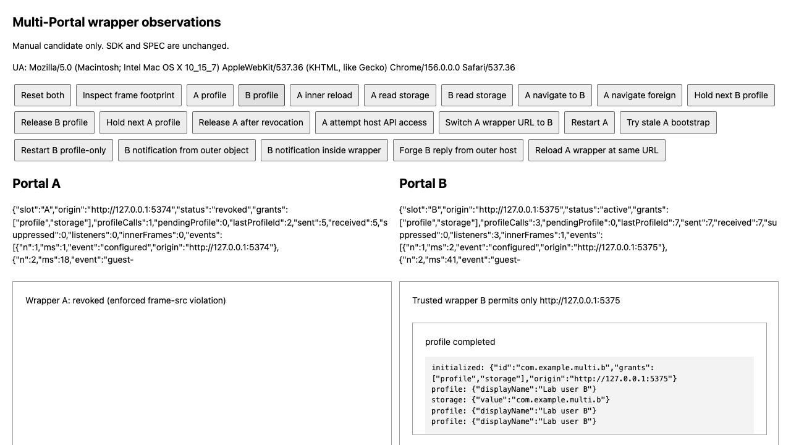

한 화면에 여러 출처를 두고,
각 Portal의 보호 경계를 나눴습니다.
단일 Portal 예제의 제약을 제품 전체의 제한으로 정하지 않고 대안을 실험했습니다. 호스트가 관리하는 보호 문서를 Portal마다 하나씩 두면, 한쪽의 이동 차단이 다른 Portal을 끊지 않는지 확인합니다.
1 · 실제로 A만 닫히고 B는 계속 동작했습니다
| 실험 | 관찰 |
|---|---|
| A·B를 동시에 시작 | 서로 다른 출처에서 초기화·프로필·저장소 동작 |
| A가 B의 출처로 이동 | A의 CSP가 차단하고 A만 폐기 |
| 그동안 B의 요청을 대기시킴 | B는 계속 기다리고, 나중에 정상 완료 |
| A가 닫힌 뒤 B 저장소 조회 | B에 저장한 값 그대로 유지 |
| B를 profile-only로 시작 | A 폐기 전후 모두 저장소는 -32000, 프로필은 정상 |

이것은 실험 후보의 관찰 결과입니다. SDK와 SPEC에 새 구조를 채택했다는 뜻은 아닙니다. 영문 보고서에 시나리오별 원본 기록과 한계를 연결했습니다.
2 · 보호 문서도 호스트가 관리합니다
5373
CSP는 A만 허용
5374
5373
CSP는 B만 허용
5375
Wrapper A: Content-Security-Policy: frame-src http://127.0.0.1:5374
Wrapper B: Content-Security-Policy: frame-src http://127.0.0.1:5375보호 문서는 호스트와 같은 출처의 신뢰된 HTML이며 미니 앱 코드가 아닙니다. 미니 앱은 계속 별도의 출처에 있습니다. 서버가 각 보호 문서에 다른 CSP 응답 헤더를 제공했습니다. 바깥 문서의 한 목록에 A·B 출처를 함께 허용하는 방식과 다릅니다.
실험에서는 실제 HTTP로 제공한 문서를 사용합니다. srcdoc는 부모 정책을 물려받으므로 같은 방식이라고 가정하지 않았습니다. HTML 정책 컨테이너 규칙과 CSP frame-src 규칙을 근거로 후보를 만들고 실제 동작을 확인했습니다.
각 보호 문서가 실제 host 커널과 iframe transport를 소유합니다. 바깥 호스트는 각 보호 문서의 초기화 정보와 수명을 관리합니다. 이번에는 프로필에 공개된 실험 문자열만 사용했습니다.
3 · 출처가 같아도 올바른 창인지 확인해야 합니다
B가 프로필 응답을 기다릴 때, 바깥 호스트가 같은 호스트 출처와 같은 요청 번호로 가짜 응답을 보냈습니다. B는 계속 기다렸습니다. 실제 부모인 보호 문서가 보낸 응답이 아니기 때문입니다.
event.origin === expectedOrigin
event.source === expectedWindow두 조건을 함께 확인하는 기존 transport 규칙이 이 구조에서도 필요합니다. 실제 B의 보호 문서에서 보낸 응답과 알림은 정상 전달됐습니다.
보호 문서 자체의 교체도 다룹니다. 바깥 호스트는 보호 문서와 출처가 같으므로 현재 Document를 읽을 수 있습니다. 창의 바깥 참조가 유지되더라도 문서 객체가 바뀌면 다른 실행 인스턴스입니다.
entry.document !== null && entry.document !== actual실제 초기화 검사 조건의 일부입니다. 같은 URL에서 보호 문서를 새로고침한 실험은 sameURL:true, sameDocument:false로 거절됐습니다. 미니 앱의 내부 페이지 새로고침은 보호 문서가 바뀌지 않아 계속 허용됐고 저장 값도 유지됐습니다.
// Identity and grants come from this registry,
// never from guest IDs or wrapper query claims.코드에 남긴 주석의 뜻은 “초기화 권한과 앱 신원은 호스트의 등록 정보가 결정한다”입니다. 게스트가 다른 앱 id나 권한을 메시지에 적어 보내도 초기화 권한이 생기지 않습니다. 게스트의 바깥 호스트 API 직접 접근은 SecurityError로 막혔습니다.
4 · 같은 출처여도 JavaScript의 기준 객체는 다를 수 있습니다
바깥 호스트에서 만든 객체를 보호 문서의 notifyEnvironmentChanged에 직접 넘기면 현재 검사기가 TypeError로 거절했습니다. 보호 문서 안에서 새로 만든 객체는 같은 내용이어도 정상 전달됐습니다.
const prototype = Object.getPrototypeOf(current);
if (prototype !== Object.prototype && prototype !== null) {
return false;
}기존 JSON 검사 코드입니다. 문서마다 JavaScript 실행 문맥(realm)과 Object.prototype이 따로 있습니다. 같은 출처라는 사실이 같은 실행 문맥이라는 뜻은 아닙니다. 그래서 바깥 문서의 객체가 안쪽 문서 기준으로는 다른 기준 객체를 가질 수 있습니다.
이번 실험은 기존 검사를 없애지 않았습니다. 신뢰된 초기화 메타데이터만 JSON 문자열로 전달해 보호 문서에서 읽고, 실제 전송용 객체는 그 문서 안에서 생성했습니다. 잘못된 게스트 요청을 직렬화해서 정상처럼 바꾸는 처리는 하지 않습니다.
커널·설정·데이터를 어느 문서가 소유할지 명확해야 합니다. 아래 수정안은 커널을 보호 문서에 두고, 실행 문맥 사이에 검사한 데이터를 전달하는 방향입니다. 이 전달용 어댑터와 바깥 커널 relay를 실험에서 검증한 것은 아닙니다.
5 · 수정안: 통신 담당자는 안쪽에, 데이터 보관자는 바깥에
보호 문서를 교체할 때 저장소까지 사라지면 앱을 다시 열었을 뿐인데 데이터가 없어집니다. 그래서 연결을 처리하는 커널과 데이터를 보관하는 provider의 수명을 나눕니다. provider는 실제 저장·조회·삭제를 맡는 담당자입니다. 아래 내용은 2026.10.26 승인된 ADR 0022 설계입니다. 이제 T18에서 구현하고 검증합니다.
| 소유자 | 맡을 일 |
|---|---|
| 바깥 호스트 | 앱 id·출처·권한 등록 정보, Portal 생성·폐기, 오래 유지할 저장소 |
| 각 보호 문서 | 자기 앱의 CSP, host 커널·설정·연결·transport, 비동기 저장소 전달 함수 |
| 각 미니 앱 | client와 앱 화면. 저장소 소유자를 직접 선택할 권한은 없음 |
현재 메모리 저장소의 실제 자료 구조를 그대로 활용하는 방향입니다.
const apps = new Map<string, Map<string, StorageSetValue>>();
// Host-selected app id -> this app's keys and values.첫 번째 Map은 “어느 앱의 서랍인가”, 두 번째 Map은 “그 서랍 안의 어느 키인가”를 구분합니다. 앱 id는 호스트가 보관한 manifest.id에서 고릅니다. 게스트가 다른 앱 id를 보내 서랍을 바꿀 수 없습니다. 실제 저장소 코드와 기존 ADR 0003의 원칙을 유지합니다.
| 상황 | 수정안의 결과 |
|---|---|
| A와 B가 같은 key 사용 | 앱 id가 달라 서로 다른 데이터 |
| 같은 앱 A를 두 번 실행 | 저장 데이터 공유, 연결·요청 번호·권한 검사는 각각 유지 |
| A를 닫고 호스트가 새 A 생성 | 새 연결을 만들고 기존 A의 저장 데이터 사용 |
| 미니 앱만 내부 새로고침 | 기존 반복 초기화 규칙 적용, 권한·저장 데이터 유지 |
| 바깥 호스트와 메모리 provider도 새로 생성 | 메모리 데이터 초기화. 영구 저장을 새로 보장하는 제안은 아님 |
객체 전달도 경계를 정합니다. 바깥에서 만든 객체를 안쪽 함수에 그대로 넘기지 않고, 보내는 곳에서 검사 → 데이터 복사 → 문자열 전달 → 받는 곳에서 읽고 검사합니다. 그 결과 보호 문서의 커널은 자기 실행 문맥에서 만든 객체를 받습니다. getter·Date·undefined 같은 잘못된 입력을 JSON.stringify로 바꿔 통과시키는 방식은 허용하지 않습니다. 게스트 요청은 기존 단계별 검사를 그대로 거칩니다.
폐기할 때는 먼저 해당 Portal을 비활성화하고 옛 함수의 접근을 막습니다. 이어서 연결·리스너·미니 앱 iframe·보호 문서 iframe·호스트 참조를 모두 정리합니다. 늦게 끝난 옛 요청이 새 A로 응답하면 안 됩니다. 이미 실행한 저장 작업까지 되돌리는 기능은 포함하지 않습니다.
A만 차단되고 B가 계속 동작하는 기반은 실험했습니다. 바깥 provider 연결, 실행 문맥 사이의 데이터 전달 코드, A를 새로 만든 뒤 데이터 유지, 보호 문서까지 완전히 제거하는 처리는 제안 단계입니다. 승인에 따라 실패하는 테스트부터 작성하고 실제 브라우저에서 확인합니다. 이 수정안은 보안 명세 §9.2에 영향을 줍니다.
짧게 정리한 ADR 0022 수정안과 상세 소유권·수명·검증 계획을 함께 남겼습니다. 단일 Portal 원안은 승인된 적이 없고, 복수 Portal 수정안은 2026.10.26 승인됐습니다.
6 · 포맷터는 Biome이고, 주석도 작성하고 있습니다
pnpm run lint # biome check .
pnpm run lint:fix # biome check --write .현재 Prettier는 사용하지 않습니다. Biome 설정에서 포맷터와 린트·import 정리가 활성화돼 있습니다. 공백 2칸, JavaScript 작은따옴표, 줄 너비 100자를 사용합니다. 이번 조사에 새 포맷터를 설치하거나 도구를 바꾸지 않았습니다.
보안·비동기·정리 순서의 이유를 영어 주석으로 남깁니다. 이번 코드에서는 Document 신원 확인, 게스트 주장을 권한으로 쓰지 않는 이유, 실제 발신 창 검사, 다른 실행 문맥의 객체, 폐기 후 응답 차단을 설명했습니다. 한국어 학습 해설은 study/에 보관합니다.
7 · 확인한 범위와 남은 결정
두 Portal에 보호 문서 두 개를 더해 iframe 요소는 총 네 개였습니다. A를 폐기한 뒤에는 늦은 응답을 관찰하려고 닫힌 보호 문서를 잠시 남겼으므로 세 개였습니다. 실제 메모리·속도나 GC를 측정한 결과는 아닙니다.
이 실험의 저장소는 보호 문서마다 따로 둔 Map입니다. 안쪽 미니 앱의 새로고침에는 유지되지만 보호 문서를 새로 만들면 초기화됩니다. 제품에서는 저장 담당자의 수명도 별도로 설계해야 합니다. 표시된 리스너 수는 실험의 등록·해제 기록이며 브라우저 전체의 누수 검사 결과가 아닙니다.
실제 Chrome 156 관찰 기록 보존
기존 995개 테스트·타입 검사·Biome·두 예제 빌드 통과
실험 코드의 별도 타입 검사 통과
실험을 자동 테스트 개수나 모든 브라우저 검증으로 세지 않음
조사 결과는 00c0c63 / 76bc212로 커밋·푸시했습니다. 이어서 ADR 0022를 복수 Portal·실행 문맥·저장소 소유권을 담은 수정 제안으로 정리했습니다. 이후 수정안도 승인됐습니다. 승인된 계약을 명세에 반영하고 T18에서 구현·검증합니다.
재현 명령은 실험 안내에 있습니다. 서로 다른 브라우저, 모든 URL·히스토리 방식, 최종 메모리 정리, 호스트 provider 연결까지 검증한 설계는 아닙니다.